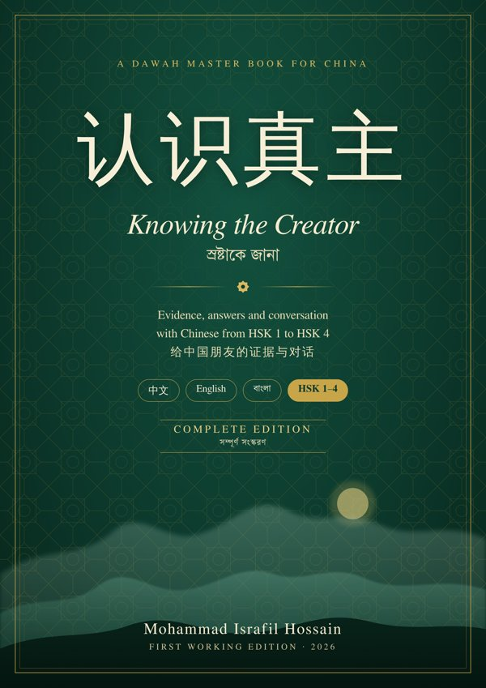

Learn Chinese. Share your faith with wisdom.
From zero to HSK 4, through the questions your Chinese friends really ask. In English, 中文 and বাংলা, free.
শূন্য থেকে HSK 4 পর্যন্ত চাইনিজ, আর বন্ধুদের প্রশ্নের সুন্দর উত্তর। সম্পূর্ণ বিনামূল্যে।
🗺 Your one-year path · এক বছরের পথ
⬇ Download · ডাউনলোড
🔊 Listen · শোনো
Every Chinese word and sentence in the book has a ▶ button. The QR codes in the printed book open the matching section.
Part 0 · Chinese from Zero · 214 items
- 0.1 How Chinese works (14)
- 0.2 The sounds: initials (25)
- 0.3 The sounds: finals (36)
- 0.4 The four tones (16)
- 0.5 Characters: strokes, order and radicals (41)
- 0.6 Typing Chinese on your phone (5)
- 0.7 Numbers, dates, time and money (20)
- 0.8 Twenty phrases for your first days (26)
- 0.9 Your first four weeks (13)
- 0.10 Exercises (18)
Part I · Dawah Handbook · 121 items
- Chapter 1: Dawah in China: method, manners and the law (8)
- Chapter 2: Why believe in God: six arguments (10)
- Chapter 3: Sixteen questions atheists ask (18)
- Chapter 4: Why Islam: the evidence in brief (4)
- Chapter 5: Questions Chinese people ask about Islam (16)
- Chapter 6: Key Quran verses and hadith (32)
- Chapter 7: Speaking: openers, phrases and the one-minute message (24)
- Chapter 8: When someone wants to become Muslim, and your own character (9)
Part II · Evidence Library · 3 items
Part IV · China Context · 70 items
Part V · Chinese Course · 495 items
- How to study (40)
- Lesson 1: Introducing yourself and your faith (37)
- Lesson 2: Asking people what they believe (37)
- Lesson 3: The universe had a beginning (36)
- Lesson 4: Design, not coincidence (37)
- Lesson 5: One God, no idols (34)
- Lesson 6: Science and Islam (33)
- Lesson 7: The purpose of life and what comes after death (36)
- Lesson 8: Suffering, free will and justice (35)
- Lesson 9: Daily-life questions: pork, prayer, hijab, Ramadan (53)
- Lesson 10: Family, conscience and the Confucian bridge (47)
- Lesson 11: Agreeing, disagreeing and handling objections politely (53)
- Lesson 12: The one-minute message, word by word (17)
Part VI · Practice Ladder · 368 items
- VI.1 How this part works (6)
- VI.2 Dawah Core Words (54 words) (57)
- VI.3 Stage 1 (HSK 1): who you are (23)
- VI.4 Stage 2 (HSK 2): give a reason (21)
- VI.5 Stage 3 (HSK 3): explain the faith (22)
- VI.6 Stage 4 (HSK 4): reason and reply (21)
- VI.7 One question, three answers (36)
- VI.8 Real-life scenarios (39)
- VI.9 Listening bank: 25 things people will say to you (27)
- VI.10 Pronunciation traps (10)
- VI.11 Words to use and words to avoid (11)
- VI.12 Daily and weekly habit system (4)
- VI.13 Exercises (48)
- VI.14 Answer key (32)
- VI.15 Method note: how the Chinese in this part was checked (11)
Appendix A · Vocabulary · 271 items
- Group A: HSK 1-2 words you already know (revision) (40)
- Group B: HSK 3-5 bridge words (learn these first) (59)
- Group C: Islam and religion vocabulary (53)
- Group D: Universe, science and philosophy vocabulary (51)
- Group E: Argument and connector words (40)
- Group F: Chinese culture and Confucian terms you will meet (28)
Appendix B · Indexes & Glossary · 68 items
Appendix C · HSK 1–4 Word List · 1100 items
Appendix D · HSK 1–4 Grammar & Exam Guide · 278 items
Appendix E · Pocket Card · 19 items
🤝 Share this book · শেয়ার করো
Know a Muslim student who is learning Chinese? Send them this page. পরিচিত মুসলিম ছাত্রদের সাথে শেয়ার করো।
ℹ️ Notes · জরুরি কথা
Chinese voice. The audio uses your phone's built-in Chinese voice. If you hear nothing: Android → Settings → Text-to-speech → install Chinese (Mandarin); iPhone → Settings → Accessibility → Spoken Content → Voices → Chinese.
Offline. Pages you have opened once keep working without internet through the app.
Legal note. This is a study book for Muslim students. In China, foreigners may not preach in public, recruit followers or distribute religious material to Chinese citizens. Answer friends who ask, and introduce anyone who wants to learn more to the ahong of a registered mosque. চীনে বিদেশিদের জন্য প্রকাশ্যে ধর্মপ্রচার ও ধর্মীয় বই বিতরণ নিষেধ।